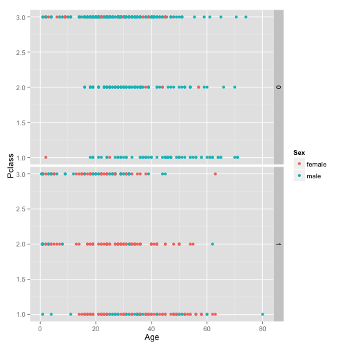

- Background/Motivation
- Code for plots
- Guidelines to reproduce locally
- For more information
Diogo Aurelio
Data Science enthusiast
These are the files produced during a homework assignment of Coursera's MOOC Developing Data Products from Johns Hopkins University, where students could pick any dataset, and should produce a web app hosted on SaaS platform from RStudio shinyapss.io.
The data set that I choose was from Kaggle's Titanic Challenge, since this is a starting point for many Machine Learning enthusiasts.
The materials can be found in:
Web app: https://dpaurelio.shinyapps.io/dpaurelio/
GitHub Repo: https://github.com/diogoaurelio/titanicShinyApp
ggplot 2 Library was used for the plotting. Here is the code for a static view of the default plot that is rendered on the web app:
library(ggplot2)
trainData <- read.csv(
url("http://s3-eu-west-1.amazonaws.com/dpadata/dataScience/train.csv"))
g <- ggplot(trainData, aes(Age, Pclass))
g + geom_point(aes(color=Sex)) + facet_grid(Survived ~.)
## Warning: Removed 125 rows containing missing values (geom_point).
## Warning: Removed 52 rows containing missing values (geom_point).

Guidelines to reproduce this project locally on your PC
To run locally this App on your computer you do NOT need to fork this repo. Please follow these instructions:
Install the necessary packages to run RStudio's Shiny Server locally. Please view the well documented requirements in the getting started page: http://shiny.rstudio.com/articles/shinyapps.html
Run the following command in the RStudio:
runGitHub( "titanicShinyApp", "diogoaurelio")
Finito.
For more information about the several MOOCs comprised in this Specialization, please visit: https://www.coursera.org/specialization/jhudatascience/
For more information about RStudio Shinyapps.io visit: http://shiny.rstudio.com/articles/shinyapps.html
For more information about Kaggle Titanic challenge visit: https://www.kaggle.com/c/titanic-gettingStarted
Last but not least, if you are getting started with this challenge and R, here is a great tutorial from Trevor Stephens that inspired me to create this repo: http://trevorstephens.com/post/72916401642/titanic-getting-started-with
Thanks you! Hope this might help you in starting out down the awesome data science and Machine Learning path.